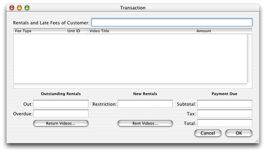
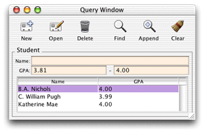
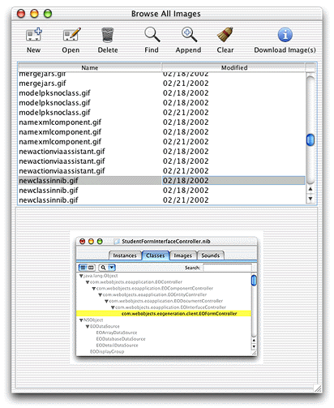

There are two starting points in Java Client development represented by two Project Builder project types: Direct to Java Client and Java Client. You should always start with the Direct to Java Client project type. The nondirect project type gives you almost no advantages—you write more code, the application is less dynamic, and maintenance costs are much higher. And you can use all the features of nondirect Java Client in Direct to Java Client applications, so you don't lose anything by starting with the Direct to Java Client project type. So unless you know that your application will not gain anything from using the rule system and dynamic user-interface generation, always choose the direct approach when building a Java Client application.
Without customizations, the fundamental difference between
the two project types is that Direct to Java Client makes use of
the rule system and nondirect Java Client does not. In code-specific
terms, Direct to Java Client applications are instances of com.webobjects.eoapplication.EODynamicApplication whereas
nondirect Java Client applications are instances of com.webobjects.eoapplication.EOApplication.
You can think of the relationship this way: An uncustomized nondirect Java Client application is a completely customized Direct to Java Client application that doesn't use the rule system for building user interfaces or managing the basic tasks of the client application such as application startup. Whereas the user interface in uncustomized Direct to Java Client applications is generated dynamically at runtime and can include static, hand-built user interfaces, the user interface in nondirect Java Client applications is always static and built by hand.
Perhaps the most significant difference between the two starting points is that Direct to Java Client provides a rapid development environment that is useful both for prototyping applications and for building full-featured, usable applications. When you start with the nondirect approach, you get almost nothing for free—you have to build all the user interfaces for the application by hand. This book highly recommends that you begin with the Direct to Java Client project type and use elements of the nondirect project type within it if necessary.
If you need the precise user-interface customization that the nondirect approach allows, it's much easier to integrate a custom interface file in a Direct to Java Client application than to develop a completely custom Java Client application (though this is possible and supported). That way, you get the best of both worlds: the advantages of Direct to Java Client and the advantages of custom interfaces built with the nondirect approach.
The primary advantage of Direct to Java Client is that it's not necessary to write source code to generate or manage all of an application's user interface. This allows you to focus on writing business logic instead. The direct approach lets you manage user interfaces without writing much source code and offers a number of alternative mechanisms to customize user interfaces:
This book covers all of these customization methods.
The user interfaces for the two staring points to Java Client development each have a particular character. However, keep in mind that it's possible to customize each type of interface to look like the other.
Typically, user interfaces built in Interface Builder for nondirect Java Client applications or for use as frozen interface files in Direct to Java Client applications resemble Figure 1-1.
Figure 1-1 A custom Java Client interface
The dynamic user-interface generation provided in Direct to Java Client applications yields interfaces that resemble Figure 1-2. However, advanced Direct to Java Client applications are likely to include other, nondynamically generated user interfaces such as custom controller classes or frozen interface files built in Interface Builder.
Figure 1-2 A typical Direct to Java Client application
Figure 1-3 shows dynamically-generated user interfaces that make use of custom controller classes, custom rules, and programmatic invocations of the controller factory.
Figure 1-3 Dynamically generated user interface
Direct to Java Client simplifies many parts of the development process and facilitates the addition of features such as localization, data access, and data model synchronization. The direct approach to Java Client is a great way to start developing Java Client applications because it allows you to rely on the rule system to dynamically generate user interfaces. Dynamically generated user interfaces are more flexible with regard to changes made in your data model than are static interfaces and provide other advantages as shown in Table 1-1.
If you decide to start development with the nondirect Java Client approach, you should keep in mind that your application will be harder to bring forward and maintain than an application started with the Direct to Java Client approach. The maintenance costs are higher for a number of reasons:
So while you can write nondirect Java Client applications, the Direct to Java Client approach helps you build applications that are far easier to bring forward and maintain. You'll also find that application development time is significantly reduced with the direct approach.